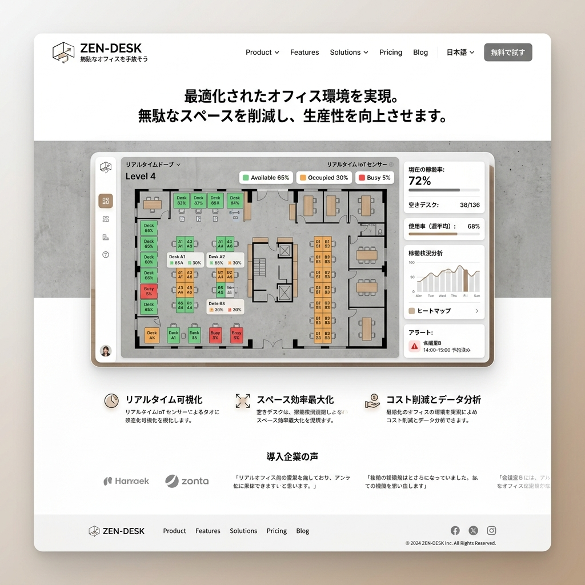

無駄なオフィスを手放そう。
空間最適化AIプラットフォーム
「週3日出社」のハイブリッドワーク時代において、固定デスクは企業の最大の負債です。IoTセンサーとAIでオフィス稼働率を可視化し、最適なレイアウトと面積縮小を提案するZEN-DESK。

「とりあえず広いオフィス」という思考停止
コロナ禍を経て働き方が多様化したにも関わらず、多くの企業が「全社員分のデスク」を維持し続けています。しかし、私達のデータによれば、平均的な都内オフィスの実態稼働率はわずか42%。ZEN-DESKは、この目に見えない巨大なコストを削減します。
全席の稼働状況を1秒単位でトラッキング
ミリ波レーダーセンサー
カメラを使わず、プライバシーに配慮しながら「人がそこにいるか」を超高精度で検知。デスク下や天井に簡単設置。
リアルタイム・ヒートマップ
フロアごとの混雑状況や、人気のある共有スペース、誰にも使われていない死角を直感的な3Dマップで可視化。
会議室の空予約防止
「予約されているのに誰もいない会議室」を検知し、開始10分で自動キャンセル。リソースの奪い合いを解決します。
データに基づいた「減床」シミュレーション
1ヶ月の稼働データが貯まれば、AIが「最適なオフィス面積」と「推奨レイアウト（フリーアドレス、集中ブースの比率等）」を自動生成します。年間数千万〜数億円の賃料削減インパクトを、具体的な数値として経営陣に提示できます。
従業員の「心地よさ」も最大化する
コスト削減だけが目的ではありません。空いたスペースをカフェラウンジやウェルネスルームに転換することで、出社したくなるオフィス環境を構築。ZEN-DESKは、削減したコストを従業員満足度へ再投資するサイクルを生み出します。
Case Study | ITメガベンチャー
全社員1,000名に対し、座席数を500席へ半減。フリーアドレス制とZEN-DESKの予約システムを導入した結果、オフィスの賃料を年間1.2億円削減しつつ、アンケートでの「オフィスの働きやすさ」スコアは30%向上しました。
ファシリティマネジメントの完全自動化
清掃スタッフへの「使用されたデスクのみの清掃指示」や、稼働状況に応じた空調・照明の自動制御（スマートビル連携）など、ZEN-DESKはオフィス運営のすべてを自動化するOSとして機能します。